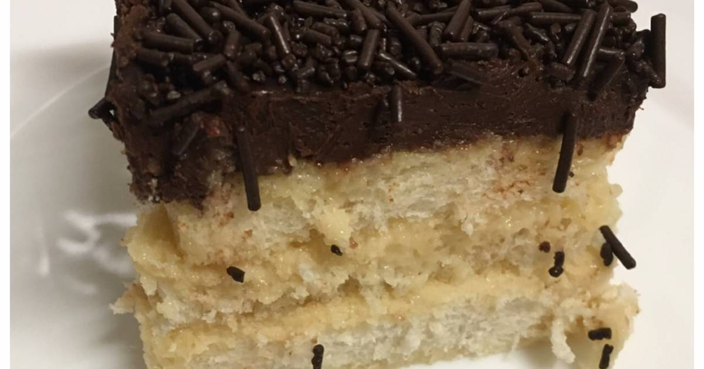

Voltar para o índice
Delícia de chocolate

Ingredientes
Creme
- 1 lata de leite condensado
- 1 lata de creme de leite
- 4 ovos
- 30 ml de essência de baunilha
Montagem
- 1 pacote de pão de fôrma sem casca
Cobertura e finalização
- 400 g de chocolate meio-amargo picado
- 100 g chocolate granulado
Modo de preparo
Creme
-
Bater no liquidificador o leite condensado, o
creme de leite, os ovos e a
baunilha.
- Reservar 1 xícara do creme para a cobertura.
Montagem
-
Em uma travessa, colocar um pouco de creme. Por cima, fazer
uma camada de pão e regar com creme,
umidecendo bem o pão.
-
Fazer outra camada de pão e regar com o restante do
creme.
- Levar ao congelador por 10 minutos.
Cobertura
-
Derreter o chocolate e misturar a xícara de
creme reservada.
- Cobrir a sobremesa com a cobertura.
Finalização
-
Cobrir a travessa com papel alimínio e levar ao forno em banho-maria a 180 º
C por 40 minutos.
- Levar para gelar por 4 horas.
-
Antes de servir, salpicar chocolate
granulado.